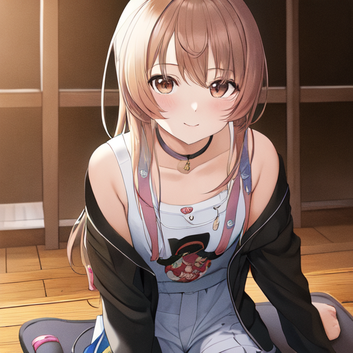
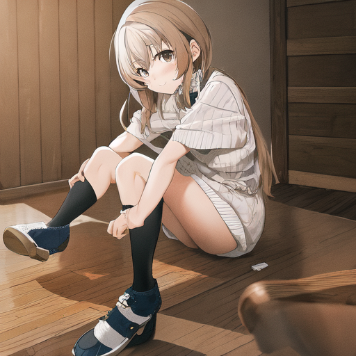
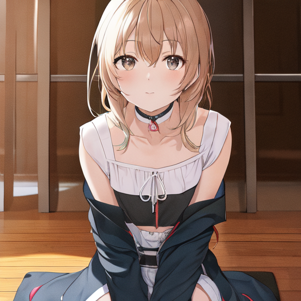
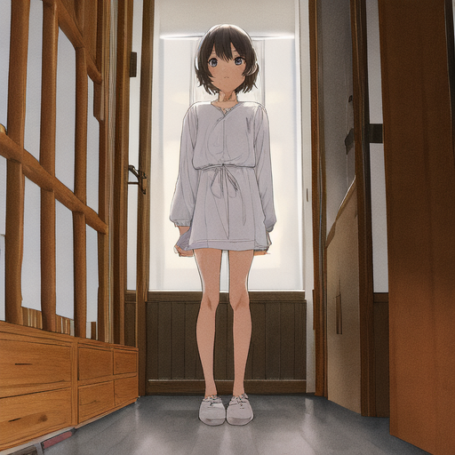
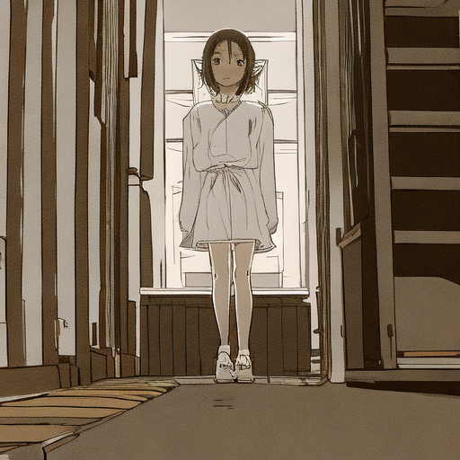
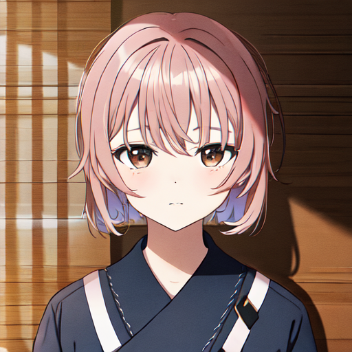
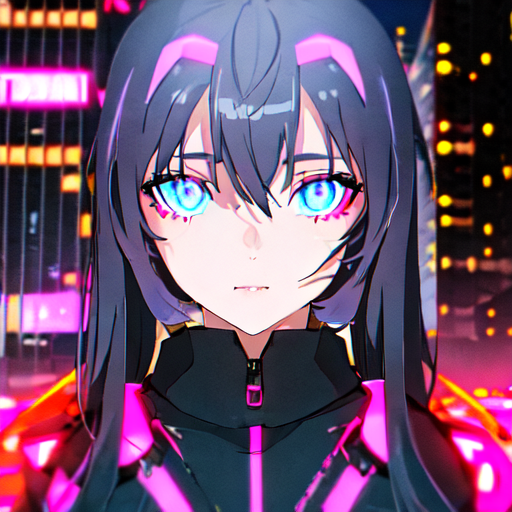

scale 0（无LoRA）
hue_sim 0.367 · sat 0.364
基准图
hue_sim 0.367 · sat 0.364
基准图



注意规律：LoRA 拧得越大，色彩离参考集越远（hue_sim 崩落）、饱和度越低（发灰）。它在把画面推向一个"灰暗的非米山舞方向"。




v5b 和 v5c 从同一底子续训出来，崩落曲线一模一样——病灶是继承的，出在共同的数据集上。




这就是"别人训好的米山舞"。同一个引擎、同一块 4050、同一个 seed——差距不是硬件，不是参数，是训练数据。
| 项目 | Chanter 金标准 | 你的 v5 系列 |
|---|---|---|
| 训练数据 | 841 张原画（官方图+裁剪+视频截图，来源单一且纯） | 195 张推特收集（混仿作/二创，来源混杂） |
| 训练底模 | Anything-5RE（与你同家族） | anything-v5（同家族） |
| 触发词 | 1girl（普通词即可——风格 LoRA 挂上就带风格） | yoneya style（自定义触发词） |
| 推荐权重 | 1.0（0.5~1.4 都能出效果） | 0.8 就已偏离方向 |
| 文件规格 | 36MB 纯 LoRA（SD1.5） | dim64 约 300MB |
注意金标准的反直觉之处：它不是"小而精"（58 张），而是"纯而量足"（841 张）。真正要害是纯度：841 张全部来自米山舞本人的作品（连裁剪图和视频截图都算，只要出自本人之手），所以量大也不会稀释风格。你的 195 张里只要混了三成仿作，就把整个数据集带偏了。
1. 先看第三区金标准 r1 那两张——你能不能一眼认出是米山舞？（如果连金标准都认不出，说明 anything-v5 底模天花板也是瓶颈之一，回炉要连底模一起换）
2. 再对比第一、二区自训图——具体差在哪：眼型？线条锐度？色彩透明感？
3. 顺手看 r2 赛博朋克——金标准 + 内容词长什么样，这是"你的引擎理论上限"。
4. 结论决定下一步：回炉数据（按金标准思路重收集本人原作）还是连底模一起升级（Illustrious/SDXL 系）。
生成口径：全部 512px / seed 42 / 30 steps / cfg 7.5 / 同负面词，2026-09-03，引擎 multimodal-engine (anything-v5 + diffusers)。
金标准权重：civitai.com/models/71979（Chanter, 米山舞 Style LoRA V2 的 2D 风格版，已剥离 text encoder 部分以兼容 diffusers）。